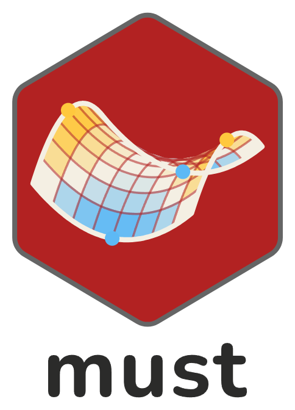

Stream invertebrates under CO2 enrichment, heatwaves, flow variability and fine sediment
Source:R/data.R
hunn_invertebrates.RdBenthic invertebrate counts at the end of a stream mesocosm experiment with a full factorial of four stressors (Hunn et al. 2024).
Format
A data frame with 128 rows (one per mesocosm) and 22 columns:
- channel
Mesocosm number (integer, 1 to 128).
- block
Spatial block (integer, 1 or 2).
- header_tank
Header tank (integer, 1 to 8), which is not in the source file: deduced from the channel numbers, since channels 1 to 16, 17 to 32, and so on, share their block, temperature and CO2, as the 16 mesocosms of a header tank do.
- temperature
"ambient"or"heatwaves".- co2
"ambient"or"enriched".- sediment
"none"or"added".- flow
"constant"or"variable".- total_abundance
Invertebrates counted in the quarter of the sample, all taxa.
- leptophlebiidae
Leptophlebiidae
- pycnocentrodes
Pycnocentrodes
- oxyethira
Oxyethira
- olinga
Olinga
- hydrobiosidae
Hydrobiosidae
- orthocladiinae
Orthocladiinae
- tanypodinae
Tanypodinae
- chironominae
Chironominae
- cladocera
Cladocera
- copepoda
Copepoda
- ostracoda
Ostracoda
- potamopyrgus
Potamopyrgus
- nematoda
Nematoda
- annelida
Annelida
The taxon columns count the 14 taxa of the source file in the counted
quarter; the attribute "taxa" gives their source names. Annelids,
which fragment, are counted in halves, and so is the total. Zeros are
taxa not found; there are no missing values.
Source
Hunn, J. G. (2024). Data for Individual and combined impacts of
carbon dioxide enrichment, heatwaves, flow velocity variability and fine
sediment deposition on stream invertebrate communities (version v1).
Zenodo, doi:10.5281/zenodo.11064543
. Licence CC BY 4.0. File
Benthic data summary.txt: the counts of the quarter (columns
25pc_...), with the header tanks added and the columns renamed
(script data-raw/hunn_2024.R of the source repository).
Experimental design
One hundred and twenty-eight outdoor stream mesocosms (ExStream system, New Zealand), eight per combination of dissolved CO2 (ambient or enriched), temperature (ambient or two heatwaves of 7 days), flow velocity (constant or variable) and fine sediment (none or 300 g of dry sediment), in two spatial blocks. Eight header tanks, four per block, fed 16 mesocosms each: temperature and CO2 were applied to the header tanks, and flow and sediment to the mesocosms. After 7 weeks, on day 35, the whole benthic community of each mesocosm was sampled, and one quarter of each sample was counted.
References
Hunn, J. G., Orr, J. A., Kelly, A.-M., Piggott, J. J., & Matthaei, C. D. (2024). Individual and combined impacts of carbon dioxide enrichment, heatwaves, flow velocity variability, and fine sediment deposition on stream invertebrate communities. Global Change Biology, 30(5), e17336. doi:10.1111/gcb.17336
See also
Other case-study data:
alba_arthropods,
fuggle_biofilms,
giesler_diatoms,
niboyet_denitrification,
vasquez_embryos
Examples
str(hunn_invertebrates[1:9])
#> 'data.frame': 128 obs. of 9 variables:
#> $ channel : int 1 2 3 4 5 6 7 8 9 10 ...
#> $ block : int 1 1 1 1 1 1 1 1 1 1 ...
#> $ header_tank : int 1 1 1 1 1 1 1 1 1 1 ...
#> $ temperature : chr "heatwaves" "heatwaves" "heatwaves" "heatwaves" ...
#> $ co2 : chr "ambient" "ambient" "ambient" "ambient" ...
#> $ sediment : chr "none" "added" "none" "added" ...
#> $ flow : chr "variable" "constant" "constant" "constant" ...
#> $ total_abundance: num 364 220 352 158 308 ...
#> $ leptophlebiidae: int 7 0 1 0 2 2 1 1 3 1 ...
# Temperature and CO2 are constant within each header tank
unique(hunn_invertebrates[c("header_tank", "block", "temperature", "co2")])
#> header_tank block temperature co2
#> 1 1 1 heatwaves ambient
#> 17 2 1 heatwaves enriched
#> 33 3 1 ambient enriched
#> 49 4 1 ambient ambient
#> 65 5 2 heatwaves ambient
#> 81 6 2 ambient enriched
#> 97 7 2 ambient ambient
#> 113 8 2 heatwaves enriched